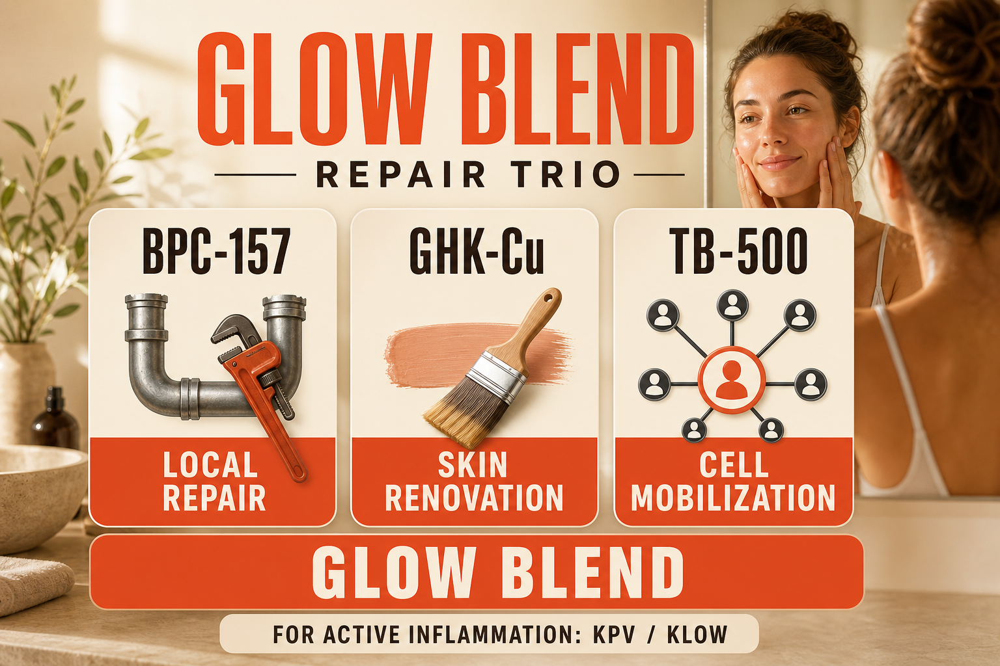

What GLOW Blend Is
GLOW is a proprietary blend of three research peptides: BPC-157, GHK-Cu (copper peptide), and TB-500 (Thymosin Beta-4 fragment). It is the recovery and regeneration stack without an anti-inflammatory component - where KLOW 80 is the four-compound blend covering repair, regeneration, collagen, and inflammation control, GLOW covers three of those four pillars without the KPV anti-inflammatory layer.
The rationale for GLOW versus KLOW depends on the user's specific goals. For people whose primary concern is skin quality, hair regeneration, and connective tissue repair - without a pronounced systemic inflammatory burden - GLOW's three-compound profile is appropriate. The absence of KPV means slightly simpler copper-related stability considerations, though GHK-Cu's copper content still produces the characteristic blue tint and the same 14-28 day stability window that applies to KLOW.
The component breakdown varies by supplier but commonly appears as: BPC-157 (5mg), GHK-Cu (30-50mg), TB-500 (5mg) per blended vial - with GHK-Cu again representing the dominant component by mass, reflecting its role as the primary collagen-driving compound in the blend.
Plain English Version
The Renovation Crew Without the Emergency Response Team
If KLOW is the full building maintenance team - the plumber, the contractor, the finisher, and the building manager - GLOW is three of those four people without the building manager.
BPC-157 is still the plumber working at specific problem sites. TB-500 is still the contractor mobilizing repair resources from throughout the building. GHK-Cu is still the finisher handling collagen, skin, and surface renovation. What GLOW does not include is the KPV building manager who specifically quiets the stuck alarm - the dedicated anti-inflammatory function.
This makes GLOW well-suited for people whose primary goals are cosmetic and structural - better skin, hair growth, faster connective tissue healing - rather than managing an active inflammatory condition. If you are dealing with significant chronic inflammation, joint disease, or autoimmune-related inflammation, the KPV component of KLOW makes more sense. If your primary focus is the regenerative and aesthetic layer, GLOW covers that territory directly.
One sentence: GLOW is BPC-157, GHK-Cu, and TB-500 combined - the repair and regeneration trio without the anti-inflammatory KPV component found in KLOW.
How To Picture It

How It Works
Each component operates through its established mechanism: BPC-157 through nitric oxide, FAK-paxillin, and VEGF pathways for local tissue repair and angiogenesis. GHK-Cu through copper-dependent metalloenzyme activation driving collagen and elastin synthesis. TB-500 through G-actin sequestration for systemic cell migration toward repair sites. Together they address local repair, systemic cell mobilization, and structural tissue regeneration simultaneously.
Documented Benefits
tendon, ligament, and joint support
the dominant GHK-Cu contribution
GHK-Cu primary mechanism
TB-500 contribution
BPC-157 contribution
the most visibly noticeable GLOW benefit
Dosing Protocol
| Phase | Dose | Frequency | Notes |
|---|---|---|---|
| Starting | 5-7 units | Daily | Conservative start |
| Standard | 10 units | Daily | Most documented |
| Skin/hair focus | 10-15 units | Daily | Higher GHK-Cu delivery |
| Cycle | 8-12 weeks | 4-week reduced dose | GHK-Cu copper adaptation consideration |
Check supplier's specific GLOW vial composition - component ratios vary.
Reconstitution Standard
GLOW vials vary by supplier. Example: GLOW (60mg vial: BPC 5mg + GHK-Cu 40mg + TB500 5mg) + 3ml BAC water = 20mg/ml total 10 units = 200mcg total (GHK-Cu ~133mcg, BPC-157 ~33mcg, TB-500 ~33mcg) Expect blue tint from GHK-Cu - normal.
Dosage Build-Up Timeline
- Week 1-4: 5-7 units daily - establish tolerance, observe skin and scalp
- Week 5-12: 10 units daily - standard therapeutic
- Week 9-12: Begin seeing collagen results - do not evaluate too early
- Week 13: Reduce dose for 4-week GHK-Cu copper transporter reset
- Resume
Common Mistakes
KLOW with KPV is more appropriate for inflammatory conditions
GHK-Cu changes emerge at 8-12 weeks
GHK-Cu copper shortens the stability window vs single-compound vials
the copper in GHK-Cu is expected to produce slight blue coloration
Contraindications And Cautions
BPC-157 promotes angiogenesis; TB-500 promotes cell migration; both warrant oncologist discussion
colonoscopy clearance recommended
GHK-Cu delivers copper directly
What To Track
- Skin texture and firmness monthly (photos useful)
- Hair density and shedding monthly
- Injury or connective tissue target - pain and mobility weekly
- Post-exercise recovery time
Stacks Well With
- KPV standalone - add KPV separately if inflammation management is also needed
- Retatrutide - metabolic optimization alongside regenerative protocol
- NAD+ - cellular energy supporting active collagen synthesis
Sources
- BPC-157 standalone profile in this guide. peptideprotocol.ca
- TB-500 standalone profile in this guide. peptideprotocol.ca
- GHK-Cu standalone profile in this guide. peptideprotocol.ca
- PubMed: GHK-Cu collagen synthesis. pubmed.ncbi.nlm.nih.gov
- Pickart L. GHK-Cu tissue remodeling review. pubmed.ncbi.nlm.nih.gov
For educational and research documentation purposes only. Not medical advice. Always speak with a qualified healthcare professional before making health decisions.